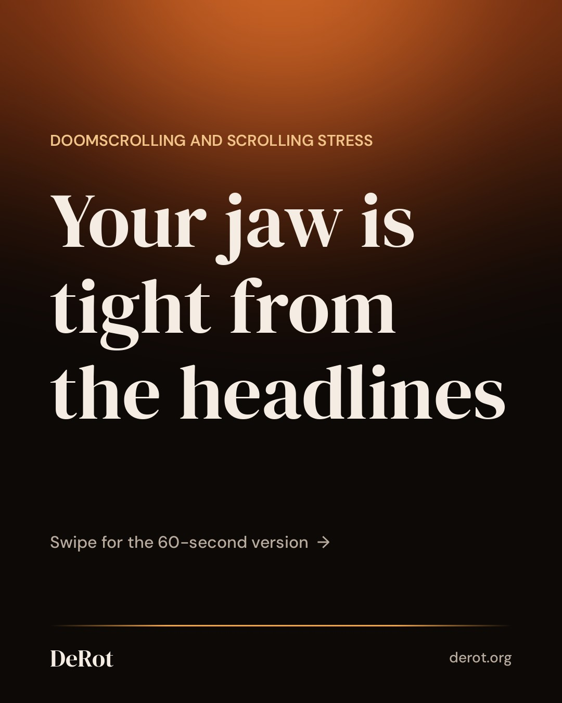
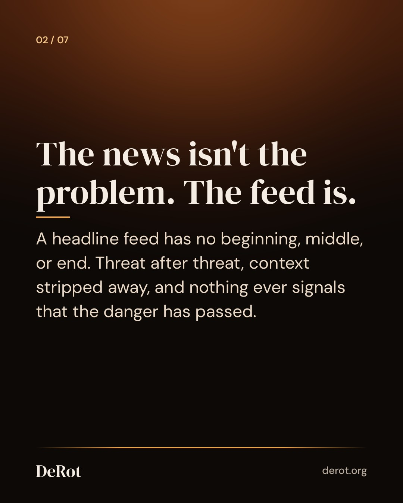
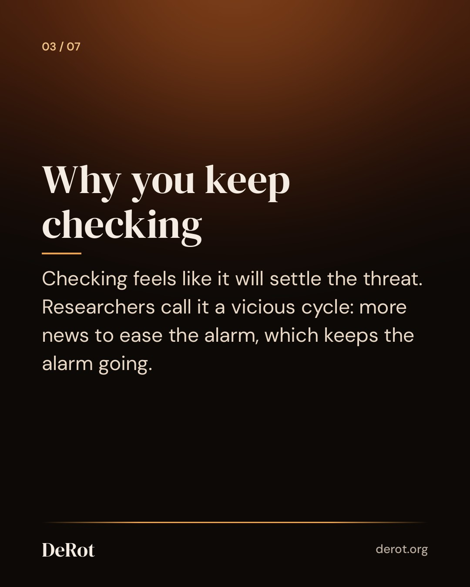
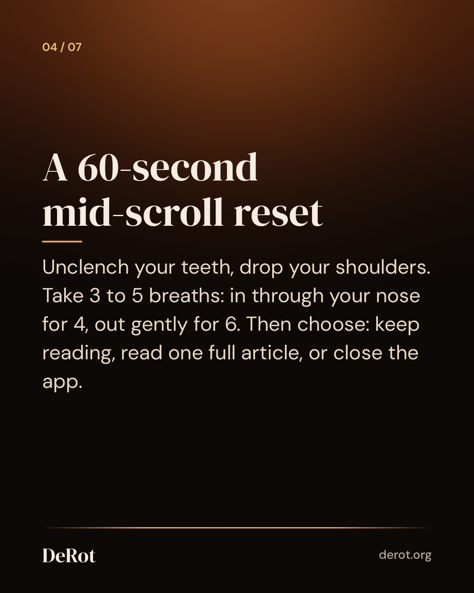
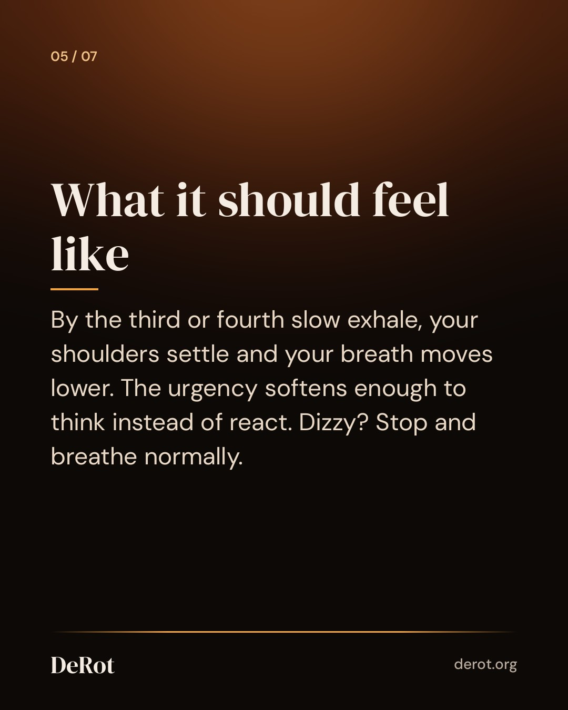
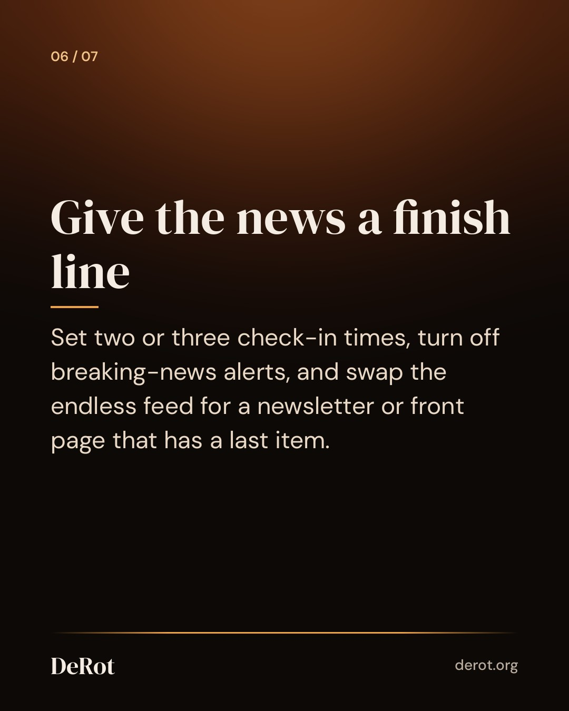

How to Stop News Anxiety Without Tuning Out of the World
Slides (Threads cover image; Instagram posts the reel)







Instagram Reel (34s)
Instagram caption
Staying informed isn't the problem. The endless headline feed is. When you notice you're wound up mid-scroll, unclench your jaw and let your shoulders drop. Take 3 to 5 slow breaths: in through your nose for 4, out gently for 6. Then decide on purpose: keep reading, switch to one full article, or close the app. Full guide: link in bio. #breathwork #nervoussystemregulation #newsanxiety #doomscrolling #calmbreathing
Threads
One reframe we keep coming back to: news anxiety usually isn't about following the news. It's the delivery. A feed serves threat after threat with no ending, so your body never gets the signal that it's over. Mid-scroll reset: drop your shoulders, take 3 to 5 breaths (in for 4, out for 6), then choose on purpose what to do next. https://derot.org/blog/how-to-stop-news-anxiety/
Staying informed isn't the problem. The endless headline feed is: threat after threat with no context and no ending, so your body stays on alert long after you have the facts. Mid-scroll, unclench your teeth, let your shoulders drop, and take 3 to 5 slow breaths: in through your nose for 4, out gently for 6. Then decide on purpose whether to keep reading, read one full article, or close the app. It also helps to set check-in times, turn off breaking-news alerts, and follow a few sources that actually end. Read the full guide for why the checking loop happens and what the research does and doesn't show.
Schedule (UTC)
| queued | 2026-11-18T22:36:00+00:00 | ||
| threads | queued | 2026-11-18T22:36:00+00:00 | |
| queued | 2026-11-18T23:30:00+00:00 |